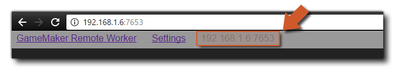
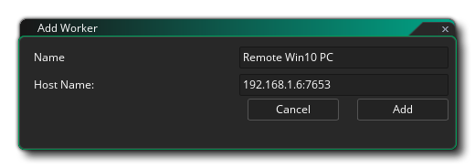

Cuando compilas tu juego, usualmente usas el trabajador "Local", que es la computadora en la que se ha instalado GameMaker Studio 2. Sin embargo, en algunas circunstancias, es posible que necesite usar otra computadora para construir sus proyectos. Por ejemplo, si está trabajando en una Mac y desea construir un proyecto de Windows, entonces querría configurar un Remote Worker y hacer que una Windows PC haga la compilación. Esencialmente, cuando usa un trabajador remoto, GameMaker Studio 2 enviará todos los archivos requeridos desde la máquina (local) en la que se está ejecutando a la máquina del trabajador remoto, y luego usará esa máquina para crear el archivo ejecutable final para el proyecto (ya sea guardando en la máquina remota, o devolviéndolo a la máquina local después). Sin embargo, antes de que pueda usar esta funcionalidad, tendrá que instalar ciertas herramientas en la máquina de compilación y realizar alguna configuración, que explicaremos aquí.
Para configurar un trabajador remoto, primero deberá instalar la aplicación de la herramienta de construcción Remote Worker en la PC que se va a utilizar. Puede encontrar esta herramienta yendo al Menú de compilación en GameMaker Studio 2 en la máquina local y seleccionando la opción "Mostrar instalador de trabajador remoto":
Alternativamente, puede hacer clic en el icono "ojo" en el Administrador de destino y obtener el instalador de Remote Worker de la siguiente manera:
El instalador se llamará algo así como " GameMakerStudio-Remote-Installer-X.X.X.XXX.exe "y necesita copiarlo en la PC que desea usar como trabajador remoto ( no necesita tener instalado GameMaker Studio 2 en el trabajador remoto, solo este programa). Una vez que lo haya copiado a la PC de compilación, instálelo siguiendo las indicaciones en pantalla y cuando el instalador haya finalizado, es posible que el sistema operativo le pida que acceda a través de su firewall a su red. Una vez que otorgue el acceso, el instalador abrirá una página en su navegador web. debe anotar la dirección IP y el número de puerto que se muestran en esta página, ya que los necesitará para el siguiente paso. 
Ahora debe volver a la máquina donde tiene instalado GameMaker Studio 2 y hacer clic en el botón Administrador de destino
para abrir la ventana de Target Manager, y vaya a la sección Trabajador y haga clic en el botón Agregar trabajador . Esto abrirá la siguiente ventana: 
Aquí debe darle un nombre a su trabajador remoto (esto es lo que se mostrará en la lista de trabajadores en el Administrador de objetivos) y luego en la sección Nombre del host, agregue la dirección que se mostró y anotó anteriormente en la máquina del trabajador, incluyendo el número de puerto.
Si todo ha ido correctamente, ahora debería recibir un mensaje que dice que puede conectarse con éxito a la máquina del trabajador remoto. Una vez que tenga su Remote Worker instalado y conectado a su computadora IDE principal, deberá configurar las Configuraciones locales de construcción para cada plataforma (consulte la sección a continuación para obtener más detalles) antes de poder compilar su proyecto.
La página de configuración muestra las diferentes rutas y la configuración de compilación para la aplicación Remote Worker. En la parte superior de la configuración, tiene las diferentes rutas que utilizará la aplicación Remote Worker y, antes de hacer cualquier otra cosa, estas deben revisarse y configurarse en rutas alternativas si es necesario (en general, las rutas predeterminadas deberían estar bien). Puede acceder a la página de configuración de Remote Worker utilizando cualquiera de los siguientes métodos:
- Haga clic en el enlace "Configuración" en la parte superior de la página Trabajador remoto que se abre en el navegador de su máquina remota:
- Use el RMB en el icono de la bandeja de Remote Worker para abrir la configuración en el navegador de su máquina remota:
- En su máquina local, abra el Administrador de objetivos y haga clic en el icono "cog"
arriba, abra la configuración del trabajador en una ventana en su máquina local:
Esto mostrará la página de configuración donde puede ver (y configurar) las diferentes opciones que le permiten configurar las rutas para construir su proyecto:
Después de verificar las rutas para el uso de la aplicación Remote Worker, puede configurar (si es necesario) las diferentes configuraciones de compilación local. Las diferentes plataformas requerirán diferentes herramientas de compilación para instalarse en la PC de compilación y el trabajador remoto tendrá que poder usarlas para construir sus juegos a través de la página Configuración. Las primeras configuraciones aquí son las configuraciones generales:
Aquí puede configurar el puerto para el servidor de ayuda y el puerto para que lo use el depurador. Estos pueden modificarse si tiene algún problema de conexión al usar el módulo de depuración, pero en general debe dejarse en sus valores predeterminados.
Ahora puede continuar y configurar las diferentes opciones para las plataformas que Remote Worker puede construir para:
- Windows

Si tiene acceso a la plataforma de destino de Windows, debe poder construir utilizando el trabajador remoto en la Windows PC inmediato usando la opción VM. Sin embargo, si desea utilizar el YYC, también deberá establecer la ruta de acceso a Visual Studio en la PC de compilación. Para obtener información detallada sobre cómo configurar una Windows PC con Windows PC para compilar sus proyectos, consulte el siguiente artículo del servicio de asistencia:
Una vez que haya configurado su Remote Worker y haya completado la configuración de compilación local (consulte la sección anterior), puede comenzar a usarlo para compilar sus juegos. Para esto, es simplemente un caso de seleccionar Remote Worker de la lista de Target Manager, seleccionar la plataforma para probar / compilar, así como cualquier otra opción (como tipo de compilación o configuración), y luego presionar Play
o Crear Ejecutable
.
NOTA: Las plataformas disponibles en Target Manager cambiarán dependiendo de las capacidades de la computadora Remote Worker, y no todos los destinos estarán disponibles. También tenga en cuenta que no hay un objetivo de "Prueba" para los trabajadores remotos.
Si simplemente está ejecutando el proyecto, entonces la máquina Remote Worker lo compilará y ejecutará, pero si está creando un ejecutable, entonces Remote Worker compilará el proyecto y luego devolverá un *.zip archivo a la máquina local para guardar.Cabe señalar que ni el botón de depuración
ni el botón Limpiar
estará disponible cuando se utiliza un Remote Worker. También tenga en cuenta que actualmente solo puede realizar una compilación remota a la vez.


Una vez que tenga el Remote Worker instalado y funcionando en su máquina remota, aparecerá en la barra de tareas como un icono, y puede hacer clic con el botón derecho en él para abrir las siguientes opciones: 
- Abrir: abre la aplicación Remote Worker en tu navegador predeterminado.
- Mostrar registro: abra el archivo de registro para el trabajador remoto en su navegador.
- Configuración de red: aquí puede filtrar qué máquinas desea que puedan enviar las compilaciones a la máquina de Remote Worker. Cada filtro puede ser un filtro de estilo CIDR o un nombre de host de una máquina para permitir. Debe tener en cuenta que si desea que varias máquinas se conecten a un trabajador remoto, o si está mezclando tipos de conexión (es decir, con cable y wifi), es posible que deba editar el rango permitido de IP aquí.
- Editar configuración: abra el menú de configuración de Remote Worker (que se explica en la sección Configuración, más arriba).
- Salir: sale de la aplicación Remote Worker. Esto significará que ya no podrá conectarse (ni compilar) con la aplicación desde una máquina local hasta que reinicie la aplicación Remote Worker.